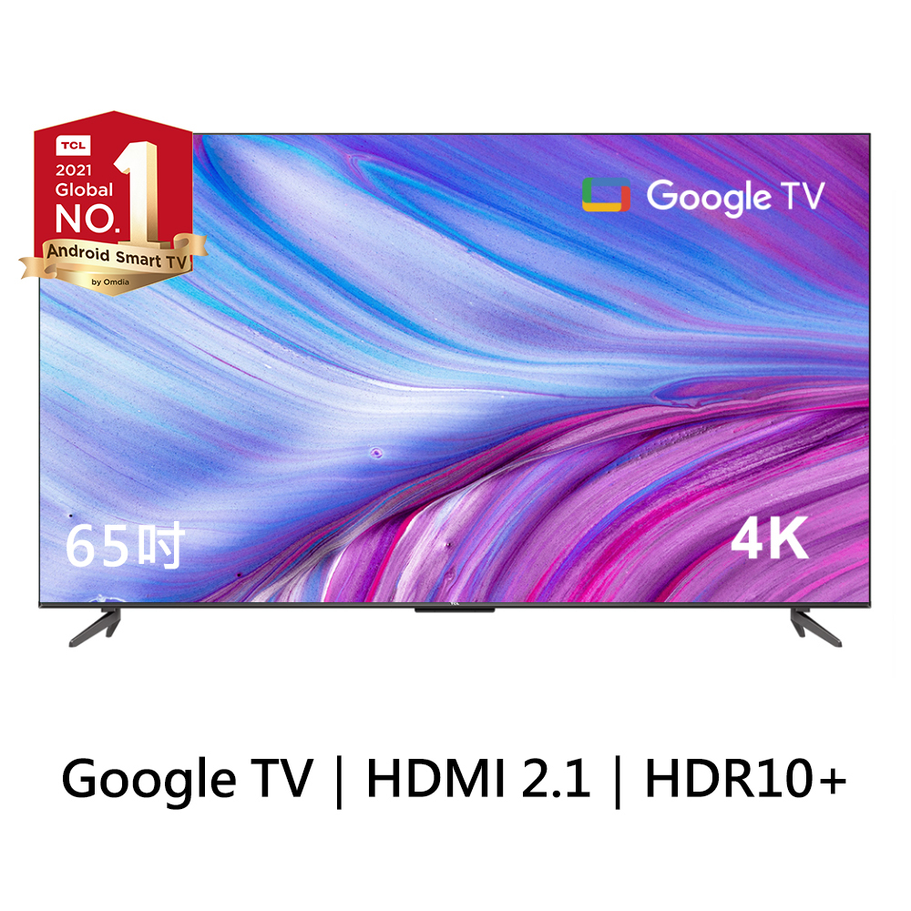
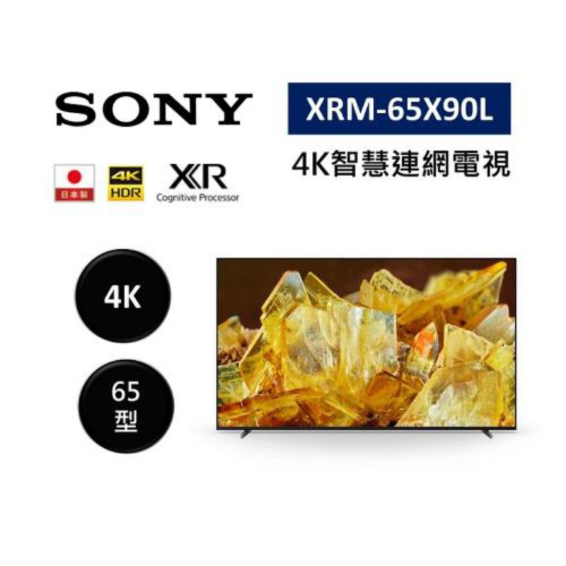

3 c&電器
豪拜兒|一次搞懂LED、OLED、QLED電視是什麼？5款暢銷電視推薦
.jpg)
隨著科技的不斷發展，現代的電視不再僅限於傳統的影像顯示，而是融合了智慧功能、高清晰度畫質和令人驚艷的音效效果，呈現出更加震撼的視聽享受。透過高畫質的影像和震撼的聲音效果，我們可以沉浸在電影的情節中、感受遊戲的激情、欣賞音樂的動人旋律，彷彿置身於現場一般。
除了卓越的視聽效果外，現代電視還具備了智慧互聯的功能，可以輕鬆地享受網絡視頻、在線遊戲、社交媒體等多種娛樂形式。而且，通過智慧助手的應用，可以輕鬆地控制家庭環境，管理日程安排，甚至是與家人朋友進行視訊通話，實現更加便捷和智慧的生活方式。
在這個數位時代，電視已經不僅僅是一個娛樂工具，它更是家庭娛樂的中心，創造珍貴回憶的重要場所，也是生活的好夥伴，因此選購一款合適的電視相當重要。
以下將分享幾款不錯的電視產品，這都是小編精心挑選的賣家，有著相對低的價格與不錯的銷量。如果您對某個商品感興趣，可以直接點擊連結購買。也提醒以下價格為推薦當下的價格，實際價格以賣場公告為準喔。
LED、QLED、OLED介紹
LED (Light Emitting Diode)
- LED電視是指使用LED作為背光源的液晶顯示器。LED背光可以分為直下式背光和全陣列背光兩種類型。
- 直下式LED背光在螢幕後面均勻放置LED燈，可提供較為均勻的亮度和對比度。
- 全陣列LED背光將LED燈均勻分佈在整個螢幕後面，能夠更精確地控制區域背光，提供更好的對比度和黑色表現。
- LED電視價格較低，但對比度和黑色表現通常不如OLED和QLED電視。
Mini LED
- Mini LED 是一種新型的背光技術，與傳統的 LED 背光相比，具有更小的 LED 尺寸和更密集的排列，這意味著可以在更小的區域內擁有更多的 LED，從而提供更精細、更均勻的背光效果。
- Mini LED 能夠提供更深的黑色和更高的對比度，這是因為它能夠更精確地控制每個 LED 區域的亮度和暗度，從而實現局部區域調光 (local dimming)。
- Mini LED 技術使得電視在保持輕薄的同時，能夠提供更出色的影像品質和觀影體驗。
OLED (Organic Light Emitting Diode)
- OLED電視使用有機發光二極體作為每個像素的發光元件，因此不需要背光源。
- OLED電視可以實現像素級別的單獨點亮和關閉，提供無限對比度和更深的黑色表現。
- OLED電視具有更廣的視角，觀看角度更寬，且反應速度更快，適合觀看動態影像。
- 儘管OLED電視具有優異的影像品質，但成本相對較高。
QLED (Quantum Dot Light Emitting Diode)
- QLED電視也是使用LED作為背光源，但與傳統LED不同，它使用了量子點技術。
- 量子點是微小的半導體顆粒，能夠精確控制光的顏色和亮度。
- QLED電視通過在LED背光後面添加量子點膜來提升色彩表現和對比度，使色彩更加鮮艷，黑色更加深邃。
- QLED電視的價格通常介於LED和OLED之間，提供了較高的影像品質和性價比。
選購指南
類型：
- LED：LED電視價格較低，但對比度和黑色表現通常不如OLED和QLED電視。
- OLED：每個像素都能自發光，因此具有更好的對比度和顏色表現。OLED電視具有無限對比度和更廣的視角，但成本較高。
- QLED：使用量子點技術以提供更廣的顏色範圍和更高的亮度。QLED電視在色彩表現和對比度方面提供了顯著的改善，並且價格相對較為合理。
解析度：
- 高清 (HD)：720p，適合小尺寸電視或預算有限的情況。
- 全高清 (Full HD)：1080p，提供更清晰的影像，適合中等尺寸電視。
- 4K超高清 (4K UHD)：3840x2160像素，適合大尺寸電視或追求更高影像細節的用戶。UHD 代表 “Ultra High Definition”，是指超高畫質。在電視領域，UHD 通常指的是分辨率為 3840 x 2160 像素的電視，也被稱為 4K 電視。這種高分辨率可以提供更清晰、更細緻的影像，使觀看者可以享受更逼真的影像和更豐富的視覺體驗。
- 8K超高清 (8K UHD)：7680x4320像素，目前仍屬於高端市場，提供極高的解析度和影像品質。
選擇適合的尺寸取決於觀看距離和觀看習慣：
- 一般而言，建議觀看距離應該是屏幕對角線的1.5至2.5倍。參考距離與尺寸：1.3米約32吋，1.7米約43吋，2.2米約55吋，2.4米約60吋，2.6米約65~70吋。
- 更新率 (Refresh Rate)：表示電視每秒刷新畫面的次數，以赫茲 (Hz) 為單位。較高的更新率可提供更流暢的影像，尤其對於運動和遊戲。
- HDR (高動態範圍)：提供更廣泛的亮度和色彩範圍，使影像更加逼真。常見的HDR標準包括HDR10、Dolby Vision和HLG。
- 連接端口：確保電視具有足夠的HDMI、USB和其他輸入端口，以滿足您的連接需求。
音質：
- 如果您不打算使用外部音響系統，則需要考慮電視本身的音質。一些電視具有內置的聲音技術，如杜比 Atmos 和 DTS。
智慧功能：
- 現代電視通常具有智慧功能，如內置的應用程序、語音助手和網絡連接性。確保選擇的電視擁有所需的智慧功能。
價格：考慮預算，並根據需求找到性價比最高的選擇。
5款熱銷電視顯示器推薦
- Panasonic國際牌Google TV智慧顯示器(65型/55型/50型)
- Xiaomi小米智慧顯示器Q2(65型)
- Xiaomi小米智慧顯示器A Pro(65型)
- TCL P737 4K Google TV智能連網液晶顯示器(65吋)
- SONY 4K 聯網電視(XRM-65X90L 65型)
產品特色
Panasonic國際牌Google TV智慧顯示器(65型/55型/50型) 65吋購買連結 或 50吋購買連結

特色：
- Android 智慧顯示器: 搭載Android作業系統，提供豐富的應用程式和內容。
- 真自然6原色色彩淬鍊: 透過獨特的色彩技術，呈現更真實、更生動的影像。
- 超明亮面板 Plus: 搭載超明亮面板技術，提供出色的亮度和對比度，在各種環境下都能享受清晰明亮的影像。
- 大畫面和音效相得益彰環繞音效: 擁有大尺寸的螢幕和引人入勝的環繞音效，讓人沉浸在影音世界中，享受極致的觀影體驗。
| 型號 | 面板尺寸 | 面板解析度 | 尺寸(含腳架) | 重量(含腳架) | 購買連結 | |
|---|---|---|---|---|---|---|
| TH-65MX800W | 65吋 | 4K (3840 x 2160) | 寬145.3 x 高91.2 x 深31.8 (cm) | 21 kg | 購買連結 | |
| TH-55MX800W | 55吋 (售完) | 4K (3840 x 2160) | 寬123.4 x 高78.7 x 深26.9 (cm) | 15.5 kg | 購買連結 | |
| TH-50MX800W | 50吋 | 4K (3840 x 2160) | 寬112 x 高72 x 深26.9 (cm) | 15.5 kg | 購買連結 |
Xiaomi小米智慧顯示器Q2(65型) 點我購買
.jpg)
Xiaomi小米智慧顯示器Q2 (65型)以其出色的螢幕品質、強大的音效表現、豐富的連線能力和時尚的設計，為用戶提供了極致的觀影體驗和多樣的娛樂選擇。
特色：
- 螢幕：採用QLED技術的螢幕，支援4K解析度 (3840 × 2160)，色域覆蓋率達到DCI-P3的92%。擁有高達10.7億的色彩深度 (8位元 + FRC)，讓色彩更加真實細緻，細節更加生動。支援60Hz的更新頻率，搭配MEMC技術，呈現流暢的影像。觀看角度廣達178° (水平/垂直)，無論身在何處，都能享受到一致的視覺享受。同時支援Dolby Vision IQ、HDR 10、HLG等影像技術，提升影像質量至更高水準。
- 音效：每側15W的喇叭輸出，支援Dolby Atmos與DTS:X音效技術，營造身臨其境的音效體驗。
- 作業系統：搭載Google TV作業系統，提供豐富的應用和內容。 處理器與儲存空間：
- 強勁的處理性能：搭載MTK 9611處理器，配備Quad A55核心，最高時脈1.5GHz，Mali G52 GPU，2GB RAM和16GB eMMC儲存空間，保證流暢的運行和儲存功能。 連線能力：
- 多樣的連接選擇：具備Bluetooth 5.0和2.4GHz/5GHz雙頻Wi-Fi，擁有3個HDMI端口 (其中1個支援eARC)，2個USB 2.0端口，乙太網路 (LAN)，光纖數位音訊輸出和3.5mm耳機插孔，滿足各種外部連接需求。
- 設計：採用無邊框設計，外框採用鋁合金，支架採用金屬，提供穩固的支撐。支援400 x 300mm的壁掛設計，適合各種擺放需求。
規格：
- 面板尺寸：65吋
- 含基座尺寸 (長 x 寬 x 高)：1450.5 × 318.8 × 907.5mm
- 不含基座尺寸 (長 x 寬 x 高)：1450.5 × 87.3 × 843.7mm
- 重量 (含基座)：18.6Kg
- 重量 (不含基座)：18.2Kg
Xiaomi小米智慧顯示器A Pro(65型) 點我購買
特色：
- 螢幕：搭載4K UHD螢幕，3840 × 2160解析度，提供極致的影像清晰度和色彩表現。色域覆蓋率達到DCI-P3的90%，色彩更加飽滿生動。支援60Hz的螢幕更新頻率，讓影像更加流暢。觀看角度廣達178° (水平/垂直)，無論身在何處，都能享受到最佳視覺效果。支援Dolby Vision®、HDR10、HLG等高端影像技術，帶來更加真實的影像體驗。
- 音效：配備2 x 12W的喇叭，支援Dolby Audio™、DTS-X 及 DTS® Virtual:X音效技術，提供身臨其境的聲音效果。
- 作業系統：搭載Google TV™作業系統，擁有豐富的應用程式和內容。預裝Netflix、Amazon Prime Video和YouTube等熱門影音平台，同時支援Google Play提供的數千個應用程式。
- 多樣的連接選擇：具備Bluetooth 5.0和2.4GHz/5GHz雙頻Wi-Fi，以及多種連接埠，包括3個HDMI端口 (其中1個支援eARC)，2個USB 2.0端口，乙太網路 (LAN)，光纖數位音訊輸出和3.5mm耳機插孔。
- 設計：擁有無邊框設計，金屬外框和塑膠支架，提供穩固的支撐和美觀的外觀。支援300 × 300mm的壁掛設計。
規格：
- 面板尺寸：65吋
- 含基座尺寸 (長 x 寬 x 高)：1446.48 x 892.3 x 287mm
- 不含基座尺寸 (長 x 寬 x 高)：1446.48 x 829.5 x 275mm
- 重量 (含基座)：16.0kg
- 重量 (不含基座)：15.8kg
TCL P737 4K Google TV智能連網液晶顯示器(65吋) 點我購買

特色：
- 螢幕：4K HDR畫質，讓極真色彩重現，搭載UHD 3840 x 2160 4K高解析面板，微調光技術展現光影細節。支援DOLBY VISION、HDR10+，呈現細膩逼真的影像。搭載60Hz MEMC動態補償技術，讓高速畫面更細緻流暢。
- 音效：搭載DOLBY ATMOS技術，呈現絕佳的音質。
- 作業系統：Google TV提供全新使用者介面，操作容易，享受無限串流娛樂體驗。遙控器一鍵開啟YouTube、NETFLIX，方便快捷。支援Chromecast一鍵投放和Google語音助理，提供更多便利功能。
- 多樣的連接選擇： 支援HDMI2.1/ALLM，低延遲極快速傳輸，讓您享受更流暢的影片觀賞體驗。
- 設計：窄邊框設計，帶來更寬廣的視覺體驗。
規格：
- 面板尺寸：65吋
- 含基座尺寸 (長 x 寬 x 高)：1446 x 352 x 880mm
- 不含基座尺寸 (長 x 寬 x 高)：1446 x 81 x 833mm
- 重量 (不含基座)：14.1kg
SONY 4K 聯網電視(XRM-65X90L 65型) 點我購買

特色：
- 螢幕：120HZ面板，提供流暢的影像呈現和遊戲體驗。4K HDR 認知智慧處理器 XR，透過智慧影像處理技術，呈現更真實的畫面。支援VRR (可變刷新率)和ALLM (自動低延遲模式)，完美支援PS5遊戲機。
- 音效：支援Dolby Vision和Dolby Atmos，提供身臨其境的音覺體驗。具備BRAVIA CORE校色和Pure Stream畫質串流，提供更高品質的音頻內容。
- 作業系統：搭載Google TV，提供豐富的應用程式和內容，增強娛樂選擇性。
- 連接選擇：具備4組HDMI和2組USB端口，方便連接外設和儲存裝置。支援光纖數位音訊輸出和3.5毫米耳機插孔，提供更多連接選擇。
- 設計：窄邊框設計，提供更寬廣的視覺體驗。
規格：
- 面板尺寸：65吋
- 含基座尺寸 (長 x 寬 x 高)：1445 x 345 x 861mm
- 不含基座尺寸 (長 x 寬 x 高)：1445 x 57 x 831mm
比較表
| 產品 | 價格 | 類型 | 尺寸 | 特色 | 購買連結 |
|---|---|---|---|---|---|
| Panasonic國際牌Google TV智慧顯示器(65型) | 4K智慧顯示器 | 65吋 | 真自然6原色色彩淬鍊，超明亮面板Plus，大畫面和音效相得益彰環繞音效 | 購買連結 | |
| Panasonic國際牌Google TV智慧顯示器(55型)-售完 | 4K智慧顯示器 | 55吋 | 真自然6原色色彩淬鍊，超明亮面板Plus，大畫面和音效相得益彰環繞音效 | 購買連結 | |
| Panasonic國際牌Google TV智慧顯示器(50型) | 4K智慧顯示器 | 50吋 | 真自然6原色色彩淬鍊，超明亮面板Plus，大畫面和音效相得益彰環繞音效 | 購買連結 | |
| Xiaomi小米智慧顯示器Q2(65型) | QLED智慧顯示器 | 65吋 | 4K解析度，支援Dolby Vision IQ、HDR 10、HLG，Dolby Atmos音效，Google TV作業系統，多連接選擇，無邊框設計 | 購買連結 | |
| Xiaomi小米智慧顯示器A Pro(65型) | 4K智慧顯示器 | 65吋 | 4K解析度，支援Dolby Vision、HDR10、HLG，Google TV作業系統，多連接選擇，窄邊框設計 | 購買連結 | |
| TCL P737 4K Google TV智能連網液晶顯示器(65吋) | 4K液晶顯示器 | 65吋 | 4K HDR畫質，60Hz MEMC動態補償技術，DOLBY ATMOS音效，Google TV作業系統，多連接選擇，窄邊框設計 | 購買連結 | |
| SONY 4K 聯網電視(XRM-65X90L 65型) | 4K液晶顯示器 | 65吋 | 120HZ面板，4K HDR 認知智慧處理器 XR，支援VRR/ALLM，Google TV作業系統，多連接選擇，窄邊框設計 | 購買連結 |
更多文章
想要了解多廚房用品嗎？請點擊以下連結閱讀更多相關文章。點我前往更多文章
想要了解多家用電器嗎？請點擊以下連結閱讀更多相關文章。點我前往更多文章
想要了解多生活小電器嗎？請點擊以下連結閱讀更多相關文章。點我前往更多文章
想要了解多3C產品嗎？請點擊以下連結閱讀更多相關文章。點我前往更多文章